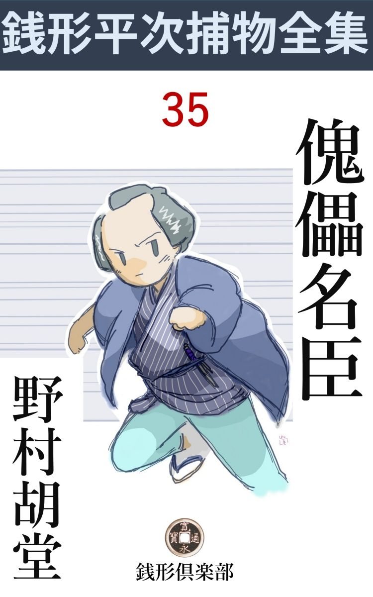
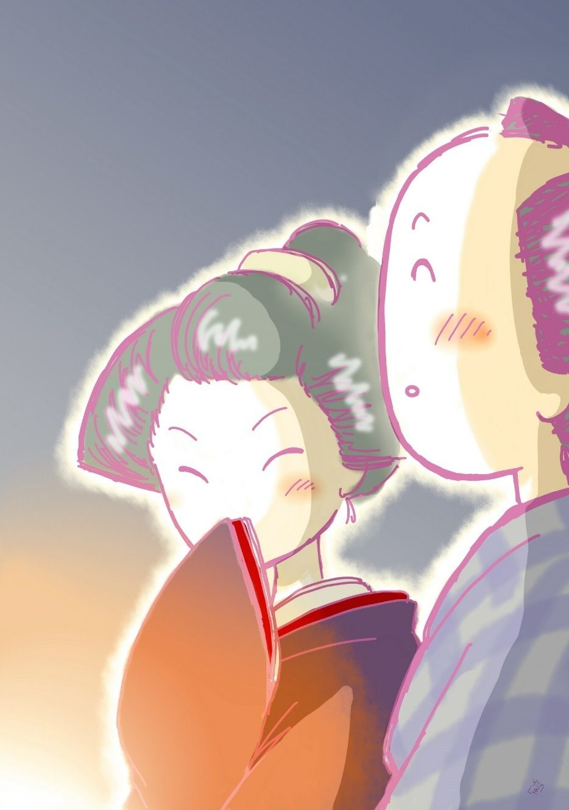

| 傀儡名臣: 銭形平次捕物全集第35話 (銭形倶楽部) | |
| 野村胡堂 | |
| ZENIGATA CLUB (2018) | |

一
「親分、手紙が参 りました」
「どれどれ、これは良い手だ。が、余程急いだと見える」
銭形平次は封をきって読み下しました。初冬の夕陽が這い寄る縁側、今までガラッ八の八五郎を相手に、将棋 の詰手を考えている------と言った、泰平無事な日だったのです。
「使いの者が待っておりますが------」
ガラッ八は膝っ小僧を隠しながら、感に堪えている平次を促 しました。
「待てよ、手紙の文面は、------至急相談したいことがあるから、この使いの者と一緒に来て貰いたいと言うのだ。場所は柳橋、名前はない。------言葉は丁寧だが、四角几帳面な文句の様子では、間違いもなく武家だ、------使いの者はどんな男だ」
「女で」
「それじゃお茶屋の女中だろう、------手前 行ってみな」
「あっし が行くんですかい」
「お茶屋から岡っ引を呼び付けるような奴のところへは行きたくねえ、第一この左様然らばの文句が気に入らねえよ」
平次は日頃にもなく妙なことを言い出しました。
「あっし も嫌いで、------お茶屋から岡っ引を呼び付けるような野郎は」
ガラッ八は内懐から顎 の下へ手を出して、剃り立ての青 鬚 の跡を、逆 様 に撫で上げました。
「馬鹿野郎」
「へッ」
「人の真似なんかしやがって、------漸く売り出したばかりの癖に、仕事の選り好みをすると罰が当るぞ」
「へエ------」
「世間でそう言っているぜ、神田の平次のところにいる八五郎は、見掛けほどは馬鹿じゃねえ------とな。手前にしちゃ大した評判だ。それにつけても、一つでも余計に仕事をして、腕を上げるのが心掛けというものじゃないか。手前も何時まで居候じゃあるめえ、------ハッ、ハッ、ハッ、ハッ」
平次はいきなり笑い出しました。
「親分」
「俺も人に意見をするようになったのが可笑しかったんだよ。年は取りたくねえな、八」
年は取りたくないと言ったところで、平次はまだ三十を越したばかり、ガラッ八と幾つも年が違うわけではありません。
「親分、行きますよ。お茶屋だろうが、お寺だろうが」
「お寺と一緒にする奴があるかい」
「物の譬 で------」
ガラッ八はそんな事を言いながらも、手早く支度をして、使いの者と一緒に飛出しました。
「思いの外難かしい仕事かも知れないよ。ドジを踏むな」
念のため、そう言いながら、平次は物蔭からそっと覗きました。使いの女というのは、二十二三、柳橋あたりのお茶屋の女とはどうしても思えない、少し武家風な、その癖妖艶なところのある年増でした。
ガラッ八の八五郎は、
「さア参りましょう、飛んだお待たせ申しました」
親分の平次みたいな顔をして女の先に立って行くのを、真 物 の平次はほほ笑ましい心持で眺めていたのです。
二
日が暮れて初冬の夜は宵 ながら更け渡るような心持でした。
「お静、何刻 だろう」
「先刻上野の戌刻 が鳴りましたよ」
「八の野郎は少し遅いようだね、間違いがなきゃア宜いが」
平次は先刻から取越し苦労ばかりしております。米茀 流 の素晴らしい能筆の手紙や、妖艶極まる使いの女、本名を隠した呼出し------などを総 合 して見ると、これは八五郎では荷が勝過ぎたかも知れない------といった、予感めいた不安にさいなまれていたのでした。
「おや？」
路地へ駆け込んだ人の足音に、お静が立上がるのと、外から戸を引開けるのが一緒でした。
「親分」
「八か。どうしたんだ、泥だらけじゃないか」
「驚いたの何のって、親分、ありゃ狐ですぜ」
「馬鹿だなア、今頃眉に唾 を付けたって追っ付くかい」
「ひどい目に逢わせあがって、畜生ッ」
「どうしたんだ。まず、落着いて話せ」
平次はそれでも、八五郎の無事な顔を見ると、ホッとした様子で、お静に目配せして、足を拭かせたり、袷 の泥を払ってやったり、どうやらこうやら、八五郎だけの男振りを取戻させました。
「親分の前だが、あれは狐ですぜ。案内されて柳橋の鶴 源 へ行くと、あの手紙を書いた客はもう帰ったと言うじゃありませんか。その辺で御免を蒙 りゃ宜いのを、あの女が------家まで案内しましょう、谷中の三崎町ですから------と言うのに釣られて、薄暗くなってから、谷中へ足を向けたのが間違いのもとで------」
「して見ると、あの女は鶴源の者じゃなかったのか。道理で------」
と平次。
「あの女は少し綺麗過ぎましたよ、それに持ちかけようが一通りじゃねえ。あんなのは羅生 門 河岸にも大根畑にもいませんよ」
「馬鹿だな、その気だから狐にも雌猫 にも化かされるんだ------それからどうした」
「第一、あの話し振りの面白さと言うものは、親分の前だが、------柳橋から谷中まで、なんの事はねえ、掛け合い噺 だ。色っぽくて、気がきいて、洒落 ていて」
「宜い加減にして筋を運べ、馬鹿馬鹿しい」
「谷中へ行くと、もう真っ暗だ。それからお寺と墓所を縫うように、半時ばかり歩き廻って、気がついたのは天王寺前------」
「陰 に籠 った声なんか出したって、凄くも何ともないよ、------第一、この寒いのに、当もなく谷中を半刻も歩く奴があるものか」
「どこをどう歩いたか、それが判らねえから不思議だ」
とガラッ八。

「新造の顔ばかり見ていたんだろう、------そんな心掛けじゃ道なんか判る道理はねえ」
「親分、口惜しいがその通りだ。すると、天王寺の常夜燈の前で、いきなりニヤリと笑った。凄いの凄くねえの、------親分の前 だが、女が良いと、一倍凄く見えるね」
ガラッ八は長 がい顔を一倍長くして見せました。少し仕方噺になりますが、本人の真剣さは疑うべくもありません。
「それからどうした」
「気が付いて見ると女はいねえ。------正に煙のように消えたね。四方 を見廻すと、芋坂へ降りる木立の中に、チラリと影が射した。------姐さん、ちょい と待った------と、追っかけると、いきなり闇の中から飛出して、ドンと来た者がある。------危ねえ、間抜け奴 ッ------と、いつもの調子でやらかすと、無礼者ッ、通行の女に戯 れるとは不都合千万、それへ直れ、ピカリと来た、------親分の前だが」
「親分の前じゃねえ、抜刀 の前で腰を抜かしたろう」
「御用ッ------と喰わせようかと思ったが、考えて見るとあまり好い器量じゃねえ、二言三言言訳を言って、根岸の方へ降りようとすると、いきなり後ろから襟 髪 を掴んで、藪の中へ------」
「何んだ、その武家に投げられたのか」
「面目次第もねえが、物事ははっきり言わないと辻 褄 が合わねえ。------気がつくと尻餅を突いていたところを見ると、親分の前 だが、どうもあっし の方が投げられたらしい」
「馬鹿だなア、それっきり引下がったのか」
「口惜しいが歯が立たねえ、何しろ恐ろしい腕だ、------その上言う事がいい」
「------」
「銭形平次------と言うから、どれほどの男かと思ったが、なんと弱い野郎か------って言やがる」
「何？ 手前を平次と間違えたのか。そいつは面白い」
平次は膝を乗出しました。
「ちっとも面白くはねえ、谷中を引張り廻されたり、藪の中へ投り込まれたり」
「諦 めろ、八。こいつは大物らしいぞ、------とにかく鶴源まで行ってみよう」
平次は立上がりました。羽織を引っ掛けると、お静の手から脇差を受取って、突っかけ草履、切火を浴びながら、促し顔に八五郎を見やります。
「今から行くんですか、もう戌刻 半 ですぜ」
「戌刻半でも子刻 でも、これは放っちゃ置けない」
平次は何やら大事件を嗅ぎ出した様子です。
三
鶴源はまだ宵でした。暖簾 に遠慮して、お勝手口へそっと番頭を呼出して訊くと、
「その方なら確かにいらっしゃいました。が、銭形の親分さんのところへ使いを出して、親分さんが旅に出られてお留守と聞くと、ひどくがっかり なすった様子で、御料理はほんの箸 を汚しただけ、御酒を一本綺麗におあけなすって、夕方御帰りになりました。------左様で御座います。御年配は四十そこそこ、まず厄 前 というところで御座いましょう。御身分は旗本や御家人ではなし、御留守居にしては地味でしたし、御大身の御用人というところで御座いましょう」
こんな事を教えてくれます。稼業柄、人間の鑑 定 だけは堂に入ったものです。
「有難う、------そんな事じゃないかと思ったよ。ね番頭さん、俺は確かに神田の平次だが、この一年ばかりは急 しくて旅どころか、大師様へお詣りさえ出来ない始末さ。今日は珍らしく暇で、朝から家にいて八五郎と詰 将棋 だ」
「へエ------」
「使いの者は俺の家へ来たには違いないが、この男を俺と間違えて、一刻 あまり谷中を引廻したそうだ。------一体その武家が俺のところへ出した使いというのは、どんな女だったい」
「女じゃ御座いません、男の方で------その御武家のお供をして来た、渡り中間 風の若い男で御座いました」
話はすっかりこんがらかってしまいました。
「そいつは変だ、俺のところへ来たのは、九尾 の狐が化けたような、凄い年増だ。------何か、恐ろしい行違いがあるに違いない」
「------」
番頭もガラッ八も顔を見合せるばかりです。
「その武家は、どこの何と言う方か、帳場や女共には判っているだろうね」
「それが一向判りません、全くのふりのお客で。それに、こんな場所へは滅多 にいらっしゃりそうもない御仁体でしたが、御帰りの時は大層な御奮発で、女中に一分ずつ祝儀を下すった上、私にまで丁寧な御挨拶で御座いました」
「外に心づいた事はないだろうか」
「親分さんへ差上げたものの外に、手紙を二本も御書きなすったそうで、------それから、ひどく沈んで、御帰りにはどこかの御寺へ廻るようにと、御供へ言い付けていなすったようで御座います」
「日が暮れてから寺詣りか」
「へエ------」
「少しおかしくはないか、八」
平次は後ろに突っ立っている八五郎を顧 みました。
「谷中へ行ったんじゃありませんか。やはり、お狐 の仲間で」
ガラッ八は胸のあたりで拳固 を泳がせて、お狐 の真似をして見せます。
「そんな気楽なことなら宜いが、------その武家は腹を切る心 算 りかも知れないよ。俺にはそんな気がしてならねえ、------お茶屋へ始めて来たような浅 黄 裏 が、女中に一分の祝儀は出来過ぎているぜ。ね、番頭さん」
「へエ------」
「寺はどこだろう」
「根岸の寺と仰しゃっただけで、もっとも------早く行かなきゃ、御墓所の門が閉まる------とも仰しゃったようで」
「墓場に門のある寺というのは、根岸に幾つもあるわけはねえ。行って見ようか、八」
「へエ------」
驚いたのは八五郎でした。谷中で散々揉 まれた上、これから根岸へ行っては、亥 刻 過ぎになってしまいます。
「番頭さん、その武家の羽織の紋を覚えちゃいないか、係りの姐さんに訊いて下さい」
間もなく番頭は女中を一人伴れて来ました。一分の祝儀が利いているせいか、これが思いの外いろいろの事を知っております。
「御召物は粗末な紬 で、御羽織は少し山が入っていましたが立派な羽二重で御座いました。御紋は丸に二つ引、御腰の物の拵 えも、大変御粗末でしたが、御人柄は立派で、少し厳 つい方で御座いました。御 酒 は手酌のグイ呑みを遊ばして、お肴 にはろくに手もお付けになりません。お言葉は江戸で、お国侍ではなかったようですが、本当に、お固い、言わば野暮なお方で、お茶屋へなどは滅多にいらっしゃる方のようでは御座いませんでした」
これだけ聴けば平次には大方見当がつきます。
四
平次の活動は電光石火の素早さでした。事件の匂いがする、飛出す、一挙に片付ける------これが日頃の平次の癖 で、日が暮れようが、夜が更けようが、そんな事に頓着する平次ではなかったのです。
根岸へ行って、寺を一つ一つ叩き起すのは、あまり楽な仕事ではありませんでした。門前の花屋で済むのは花屋、それで解らないのは門番、門番のいないのは、庫 裡 へ廻って、寺男を叩き起すのです。
心付けと、十手と、詫言 と、脅かしと、硬軟いろいろに使いわけて、亥刻 半 （十一時）頃、廻って来たのは、御 隠 殿 裏 でした。
「谷中へ近いからこの辺かも知れない」
平次のそう言った見当は外れませんでした。西洞院 の寺男が、少しばかりの心付けと、十手を見せられて、
「薄暗くなる頃、立派な御武家が見えました。私は新米でお名前は存じませんが、本堂で拝んで、それからお墓へ廻って、半刻ばかり経って、暗くなってからお帰りのようで御座いました」
「案内はしなかったのかい」
「いたそうと思いましたが、よく知っているからと仰しゃって、閼 伽 桶 へ水だけ汲んで差上げました」
寺男は夕方の忙しさに不精した様子ですが、それにしても半刻あまり、薄寒い墓地にいたのは仔細がなければなりません。
平次とガラッ八は、寺男に提灯を持たせて、墓地の中へ入って行きました。寺男は何分新米で、何にも判りませんが、それでも、今日人の詣った墓はすぐ判りました。
「ない、------その武家の羽織は、袷 とは不似合の山の入った羽二重だったというから、いずれ拝領物を一生着ると言った肌合の人だろうが、丸に二つ引の定紋を打った墓で、今日詣ったらしいのが見当らないのは不思議じゃないか」
平次は一方ならず落胆 した様子です。
「これは？ 親分」
「その紋は丸に三つ引じゃないか------おや、墓が濡れている、------丸に三つ引の紋を、鶴源の女中が、ありふれた丸に二つ引の紋と間違えたかも知れない。こいつはおかしいぞ」
平次は横手へ廻って俗名を読むと、もう一度寺へ取って返して、住職を叩き起しました。
「神田の平次殿と言われるのか。それは御苦労なことじゃ。------あれは、御旗本で御役高共四千五百石の大身、大目付までせられた、安倍丹後守の御墓じゃ。二年前に亡くなられて、当代は安倍丹之丞様、お若いが、先代に優 るとも劣らぬ知恵者で喃 、早くも御役付、御小姓組御番頭 に御取立、御上の御用で半歳ほど前から駿 府 へ行っておられる。明日は江戸へ御帰りということじゃ。夕景先代の御墓へ詣られたのは、多分用人の石田清左衛門殿であろう。用人と言っても、先々代は東照宮様御声掛り、直参に取立を断ったという石田帯 刀 様で、陪 臣 ながらたいした家柄じゃ」
眉の白い老僧は、こんな事まで親切に話してくれます。
「御屋敷はどっちでしょう」
と平次。
「谷中じゃ。三崎町で聞けば判る」
平次はそこまで聞くと、老僧の話の腰を折るように立ち上がりました。
谷中まで一走り。
安倍丹之丞の屋敷はすぐ判りましたが、厳重に門が閉っていて、子 刻 近い刻限では入れようはありません。
「親分、諦めましょうか」
散々門を叩かせられた上、ガラッ八は到頭悲鳴を挙げてしまいました。主人は留守、門番は横着に寝込んで、開けてくれそうもなかったのです。
「表から名乗りをあげて行っちゃ、具合が悪いことかも知れないよ。------どうだい八、泥棒の真似をして見る気はないか」
「へエ------、泥棒の真似？」
「塀 を乗越えるだけさ、------人の命には代えられない」
「やりつけない仕事だから、うまく行きゃいいが」
「泥棒の真似なんかやりつけてたまるものか」
二人はそれでも忍び返しのないところを探して、たいした苦労もなく塀を越してしまいました。
中は真っ暗ですが、用人石田清左衛門の長屋を探すのはそんなに難 かしい事ではありませんでした。
「八、これからが難 かしいぜ」
「雨戸でも破るんで？」
「シッ」
二人は庭の方から、灯の漏れる部屋の外へ廻りました。
五
上野の子刻 の鐘が、その最後の余韻 を闇の中に納めると、石田清左衛門は、かねて用意した席へピタリと坐りました。
二枚の畳を裏返して、白布を敷き詰め、前の経机には、観音経が一巻、その側には、ユラユラと香煙が立 上 っております。
黙って母家 の方を伏し拝むと、心静かに取上げたのは言うまでもなく短刀。蠟 塗 の鞘 を払って、懐紙をキリキリと巻くと、紋服の肌を寛 げて、左脇腹へ------。
「待った」
不意にどこからともなく声が掛ります。
石田清左衛門は静かに四方 を見廻しましたが、心の迷いと思ったものか、もう一度短刀を取直しました。
「お待ちなさいまし」
縁側の戸が一枚、敷居から外れて闇の中へ落ちると、そこから現れたのは、平次と八五郎。手と足とで飛込むように、呆気に取られる清左衛門の短刀に縋 り付いたのです。
「誰じゃ、不躾 千万」
静かな最期を妨げられて、取乱したという程ではありませんが、さすがにムッとした様子です。
「私はお使いを頂いた神田の平次で御座います」
「えッ」
「中に悪者が入って、鶴源へは参り兼ねましたが、その代り危いところへ間に合いました」
「------」
「石田様、仔細を仰しゃって下さい。どんなことがあるにしても、腹を切るのはせっかちで御座います」
「武士が腹を切るのにせっかち も悠長 もない、------俺は、夜明けまでは生きていられないのだ」
「それは又どう言うわけで御座います。とにかく、一度はこの平次に相談しようとなすった位ですから、一応承 ってから、何とか思案のつくものなら、この平次の及ぶだけの事は致して見ましょう。夜明けまでと言うと、まだ、たっぷり三刻 あります」
平次は何時の間にやら、清左衛門の手から短刀をもぎ取っておりました。
「それでは話そう、------が、昼のうちなら、何とか手をくだす術 もあったろう。今となっては何分遅い」
清左衛門は寛げた肌をかき合せると、屏風を引き寄せて腹切り道具を隠し、火桶の側に二人をさし招いて話し出しました。
その話はかなり長いものですが、掻いつまんだ筋だけ通すと、こんな事になります。
安倍家の先代、大目付を勤めた丹後守が亡くなったのは二年前、跡を襲 った丹之丞は、実は丹後守の甥 で、当年三十二歳の男盛りで非常な才物には相違ありませんが、物事に表裏があるので目上の受けの宜い割に、家来にとっては結構な主人ではなかったのです。
果して、義父丹後守の歿後 は、御小姓組御番頭と役付にはなりましたが、一面、丹後守の娘で、自分とは従 兄 妹 の間柄なる本妻の綾 野 を嫌い、到頭一年経たないうちに、柳橋芸者のお勝を、奉公人名義で妾にいれ、それを寵愛するの余り、本妻の綾野を瘋狂 と称して、土蔵に押込めてしまいました。
そんな悪法を書いたのは、丹之丞の遠い従弟 で、安御家人崩れの針目正三郎、これはお猿のような感じの、肉体的に見る影もない人間ですが、悪智恵にかけては、人の十倍も働きのある男。常に丹之丞とお勝を煽 動 して、レールへ乗せない工夫ばかりしているのでした。
当主丹之丞にとって、用人の石田清左衛門はこの上もなく煙たい存在には相違ありませんが、この人間がいないと公儀のあしらいが違って来ますから、安倍家が立ち行きません。妾のお勝や、掛 り人 の針目正三郎では、どんなに石田清左衛門を邪魔にしたところで、東照宮御声掛りの石田帯 刀 を祖先に持ち、先代の愛臣------用人とは言いながらも、公儀に知られた名士石田清左衛門に、指一本かけることも出来なかったのでした。
安倍丹之丞が、上の御用で駿府へ行ったのは半歳前、江戸を出発しようと言う時、さすがに、悪智恵の逞 ましい従弟や、妾のお勝に任せて置くのは不安だったものか、家康公の御墨付一封と、これも拝領物の安倍家重代の宝物、郷義弘の 短刀------金銀作りの見事な拵えのまま、手文庫に納めて、用人石田清左衛門に預けました。
それは、繰り返して言いますが、駿府に出発しようと言う前日の事でした。忙しい中ながら、手文庫の掛け紐の上に、一寸幅ほどに断った美濃紙を巻いて、主人丹之丞と石田清左衛門が封印をし、そのまま、人知れず清左衛門の長屋へ持って来て保管して置いたのです。
ところが、主人丹之丞の用事が済んで江戸へ帰るという三日前、所用あって外出した清左衛門が帰って来て見ると、留守番をしていた下男の寅 蔵 は、自分の部屋で、梁 に首を吊って自殺し、用 箪 笥 の錠前は壊され、その中に入れてあった手文庫の封が切れて、御墨付と短刀は、真っ赤な偽物と変っていたのです。お墨付と見せたのは、どこにでもある小菊二三枚、短刀は、脇差を摺 り上げて禿ちょろ鞘に納めた、似もつかぬ偽物だったのでした。
石田清左衛門の驚きは想像も及びません。この東照宮様のお墨付と、公儀に書き上げになっている家宝の郷義弘が無くなれば、間違いもなく安倍家は断絶でしょう、これほどの大事な品を預って、それを護り了 せなかった清左衛門は、腹を三つ切っても追っつかないことになるのでした。
それから三日間、清左衛門は血眼になって探しました。寅蔵の自害は、簡単な届出で済みましたが、御墨付と短刀の紛失は、どうも、それと関係があるような気がしてならなかったのです。
怪しいのは、針目正三郎とお勝ですが、それも取止めた証拠は一つもありません。
幸い屋敷の中が清左衛門の自由になるので、縁の下から天井裏、土蔵納屋の中は言うまでもなく、雇人の荷物まで探しましたが、三日目の今日まで、御墨付や短刀の匂 も判らなかったのです。
正三郎とお勝は、一生懸命手伝ってはくれましたが、ともすれば後を向いて赤い舌を吐いていそうで、清左衛門は全く気が気ではありません。
明日の朝は、いよいよ主人丹之丞が江戸へ帰ると判った時、清左衛門は到頭評判の銭形平次に逢って見ようと思い立ちました。
屋敷へ呼ぶわけにも行かず、そうかと言って、平次の宅へ行けば、後を跟 けられるに決っております。思案に余ってお茶屋から使いを出すことまでは考えつきましたが、その使いに出した下男の森三が、途中から買収されて、宜い加減な返事を持って来たとは夢にも知らず、平次に頼む望みも絶えて、菩 提 寺 に先代安倍丹後守の墓に詣 で、当主丹之丞が帰る前にいよいよ腹を切って申訳けだけはしようと思ったのでした。
六
「こんなわけだ、平次。主人丹之丞様は、川崎に泊っておられる。明日、早立ちで、辰刻 か------遅くも巳 刻 にはこの御屋敷へ御還りになろう。御留守を預った石田清左衛門は、御墨付と短刀が紛失しましたとは申上げられない、腹を切る気になったのはそのためだ」
清左衛門は静かに語りおわりました。今死を決した人のようでもない、何となく落着き払った親 しみは、この人の人徳というのでしょう。
「危いことで御座いました。御墨付と短刀はこの屋敷から出る筈は御座いません。きっと明日の朝までには捜し出してお目にかけます」
「------」
平次は安請合いと思われても仕方のないような、気軽な調子でこんな事を言います。
「ところで、その手文庫を拝見さして下さいませんか」
「それは易 いことだ」
清左衛門の取出したのを見ると、梨 地 に菊の花を高 蒔 絵 にした見事な手文庫の、朱の紐を巻いた封は破られて、中を開けると、二三枚の小菊と、見すぼらしい短刀が入っているだけです。
「この贋物 の短刀には御心当りは御座いませんか」
「死んだ寅蔵のかも知れないと思うが、------イヤそんな筈はない。その拵 えはひどくなっているが、短刀には見どころがある。銘を摺り上げてあるが、相州物の相当の品だろうと思う」
「寅蔵とやらも、こんな短刀を持っていましたか」
「そんな気がする。が、判然 はしない」
「ところで、この封印は、丹之丞様のに間違いはないでしょうな」
「それは間違いはない、御主人は、その印形を駿府へ持って行かれた」
「この手文庫をお受取りになる前か、すぐ後で、何か変ったことはありませんでしたか」
平次は変なことを訊ねました。
「御主人が封印を遊ばして、いざ私の封印という時、中間 部屋で大喧嘩が始まった、------賭 事 の争いらしかったが、私が行って止めると、顔を見ただけでピタリと納まった」
「その時、手文庫に手を触れた者は御座いませんか」
と平次。
「いや、ない、ありよう筈はない。手文庫は御主人の前に置いてあったし、私が喧嘩を納めて帰って来るまではほんの煙草二三服の間もなかった」
「もう一つ伺いますが、お勝さんとやらと、正三郎という方の荷物はお調べになりましたか」
「雇人共の荷物を調べた時、両人共進んで自分の荷物を調べさした」
「お勝さんと言うのは、二十二三の凄いほど綺麗な方で御座いましょう。左の下唇の側に、愛嬌 ぼくろのある」
「その通りだ、どうして知っておる」
石田清左衛門は非常に驚いた様子ですが、平次とガラッ八は顔を見合せて苦笑しました。ガラッ八を平次と間違えて、この屋敷近い谷中まで送らせて、滅茶滅茶に翻 弄 した女、それは四千五百石取の大旗本の妾お勝が、たまたま奔放な野性の赴 くまま、名題の銭形平次を弄 んだ積りの悪 戯 に外ならなかったのでした。その時ガラッ八を投げ飛ばしたのは、多分主人の従弟 の針目正三郎でしょう。
それより先、新米の下男森三は、石田清左衛門の使いで鶴源を出たところを、待構えていたお勝に捕って、------平次は旅に出た------と言い含められて帰ったのでしょう。
「私には段々判って来るような気がします。それから、夜の明けぬうちに、土蔵に押込められていなさる、という奥方の綾 野 様に御目にかかりましょう」
「それは安いことだ」
石田清左衛門は提灯を点けて、二人を戸 外 へ送り出しました。
「えいッ」
闇の中で、不意に平次の声。
提灯を差出すと、軒下に中間風の男が一人、見事な当身を喰わされて目を廻しておりました。
「これが森三というので御座いましょう。私共の話を立ち聴きして、注進に出かけるところでした。明日まで窮命 させましょう、縄と手拭を------」
平次は正体もない森三をキリキリと縛り上げると、猿轡 を噛ませて、物置の中へ放り込みました。
「さア参りましょう」
どこまで落着いているかわかりません。
七
翌る日巳刻 （十時）少し前、安倍丹之丞は谷中の屋敷に帰りました。
役高を加えて四千五百石というと、小さい大名ほどの暮し、家の子郎党の出迎えの物々しさ、その歓迎の晴がましさと言うものはありません。
丹之丞は衣服を改め、旅の埃 を払って即刻登城。夕景、上々の首尾で立ち帰りました。
「清左衛門を呼べ、誰か」
「ハッ、御召しで御座いましたか」
清左衛門は、丹之丞の前に平伏しました。打ち寛 いだ丹之丞の前には、久し振りの愛妾お勝が精一杯の粧 いを凝らして、旅の疲れ休めの盃をすすめております。
「その方に預けた手文庫はどうした。あの中には、身にも家にも代え難い大事の品がある。持って参れ」
「ハッ、これに持参いたしました」
石田清左衛門は後ろの襖の蔭へ、何時の間に持ち込んだか、梨 地 高 蒔 絵 に朱の紐を結んだ手文庫を、恭しく捧げて、主人丹之丞の前に据えました。
「清左衛門」
「ハッ」
「封印はどうした」
「切れております」
「馬鹿奴、封印を切って持って来るとは何事だ、------万一中に間違いがあると、その分には差し置かぬぞ」
「------」
手文庫の蓋 を払った丹之丞。
「これは何だ、清左衛門」
いきなり立上がると、足を挙げてハタと手文庫を蹴飛ばしました。畳の上に乱れ散る小菊、偽物の短刀。
「恐れながら------」
「何が恐れながらだ。権現様御墨付、郷義弘の 短刀、この二品をその方に預けたではないか。このような唯の懐紙二三枚と、大なまくら の短刀を預けた覚えはないぞ」
「ハッ」
「御墨付と短刀は安倍家の重宝、一日もなくて叶わぬ品だ。どこへやった」
「清左衛門が御預り申上げたのは、この二品に相違御座いません」
「ば、馬鹿奴」
丹之丞は思わず一刀の柄 に手を掛けました。
「篤 と御配慮を願います。私奴 が御預り申上げましたのは、確かにこの小菊となまくら 」
清左衛門は顔を上げました。強 かな四十男の表情は、若い主人を圧して、寸 毫 も譲る気色はなかったのです。
「あの二品がなくては、安倍家は断絶だ。それに直れ、手討にしてやる。せめて公儀への申訳け」
丹之丞の手には早くも抜刀 が、連ねた灯にギラリと光ります。
「恐れながら、御墨付と短刀は、この御屋敷の中にあるに相違御座いません、------御屋敷中の物で、私奴 の調べの届かない品と申せば、殿様御出発際 錠前をおろされた御手元の御用箪笥だけで御座います。念のため、御所持の鍵にて、その上から二番目の抽 斗 を御調べ遊ばすよう、平に御願い申上げます」
「無礼者、予が自身で隠したと申すのか」
丹之丞はカッとなりました。思わず一刀を大上段に、はしたない見得をきります。
「何で左様なことを、------ただ、世の中には思い違いと申すことが御座います。その御用箪笥の中をお改めの上、そこにも二品がありません時は、私の手落ちに相違御座いません。打首なり縛 り首なり、御心のままに御成敗を願います」
「汝 れッ」
丹之丞は振りかぶった刀のやり場に困りました。
「まアまア、それは御無体。石田、貴公も悪いぞ、一体家来の癖 に口が過ぎる。御詫をせい------殿には次の間で、盃を改めて御寛ぎ遊ばすよう」
どこからともなく飛出して、振り冠った丹之丞の刃と、石田清左衛門の間へ入ったのは、念入りの醜男 のくせに、軽捷で精力的で、何となく強 かさを感じさせる正三郎------丹之丞の遠い従弟という、針目正三郎その人だったのです。
八
「平次、俺はもう武士が厭になった。お前が見透した通り、御墨付と短刀は、やはり主人の用箪笥の中にあったらしい」
長屋へ帰って来ると、石田清左衛門は、如何にもがっかり した様子でした。
「そうで御座いましょう。それでなくては、辻 褄 が合わないことばかりで御座います」
平次は会心の笑み------物悲しくさえ見える苦笑を見せました。主人に裏切られて、打ち萎 れた石田清左衛門を見ると、自分の予言が当ったことなどに、つまらぬ誇りを感じてはいられなかったのです。
「私には解らぬ事ばかりだ。この後の身の処置も付けなければなるまい。平次、------あの二品はどうして主人の用箪笥にあったか、教えてくれぬか」
清左衛門の折入った顔を見ると、こればかりは言うまいと思った平次も、ツイ誘 われるように唇が綻ろびます。
「石田様、お気の毒で申上げられませんが、この上隠して置くのも罪が深過ぎます。何もかも御話し申しましょう」
「------」
「三四日前に手文庫の封を切られた時、中味が紛 失 せずに、念入りに偽物と変っていたのが第一番の不思議で御座います。手文庫の中の二品を狙ったのなら、偽物を用意して来て、わざわざ取換えて行く筈は御座いません。------どうせ封印を切ったのは、外 から一目見れば判るのですから、中へ偽物を入れたところで、何の誤 魔 化 しにもならないのです。まして、その偽物は、真 物 とは似も付かぬ粗末な品で、誰が見ても一目でそれとわかります」
「成程」
「曲者は、封印さえ破ればよかったのです。封印を破るところを寅蔵に見付けられて、驚いて絞め殺したので御座いましょう、それを梁 に吊して逃げ帰ったのです」
「封印を何のために破ったのだ」
「石田様、驚いてはいけません、貴方様を罪 に陥すためでした」
「えッ」
「中味は前から偽物だったので御座います」
平次の言う事は益々奇っ怪でした。
「そんな事はない、主人から受取る時、よく調べて封印をした------」
「御主人が封印をして、石田様が封印をする前に中間部屋の喧嘩が始まってお立ちなすったと仰しゃったでしょう」
「その通りだ」
「その喧嘩も細工 です、------石田様が立った後で、御主人は御自分の封印を破り取って、手文庫の中味を偽物と摺り換え新しく封印し直して、素知らぬ顔をしておられた。石田様は喧嘩を納めて帰って来られて、その上へ御自分の封印をなすった。------中を空にして置くと持った時の心持で判ります、偽物を入れたのは手文庫の手応えを誤 魔 化 すためで御座いました」
「フーム」
「私が、このお屋敷の中で調べ残した、たった一つの用箪笥の中にあるに相違ないと申上げたのはそのためで御座います」
「何のために、そのような事を」
清左衛門はゴクリと固唾 を呑みました。目は血走って、唇を破れるほど噛んでおります。
「御主人丹之丞様にとって、先代の愛臣、石田清左衛門様は煙たくてたまりません。その上折があれば小言も言い、ツケツケ諫 めもし、苦い顔もする。ことに、お勝の方と、正三郎がたまりません」
「------」
「丹之丞様は才物だがお若い。充分我儘で、不人情でもいらっしゃしゃる。先代の愛臣を何とかして取り除きたいが、公儀まで知られた方で、石田帯 刀 様の子孫を、腹を切らせるわけにも、追い出すわけにも参りません」
「解った、平次------、主従の縁もこれまで。それほど邪魔な清左衛門なら覚悟がある」
石田清左衛門は勃然 として立上がりました。何をやり出す気かわかりませんが、日頃温良な人物だけに、思い詰めた気魄の凄まじさは、却って近寄り難いものがあります。
「石田様、放って置きなすった方が宜しゅう御座いましょう。黙って御覧になっていても、今にデングリ返しが始まります」
石田清左衛門は腕を組んでドカリと坐りました。苦悩をそのまま刻んだような顔の皺 。たった一日の間に、この人は三十ばかり年を取ったのではあるまいかと思うようです。
九
「石田様、火急の御召しで御座います」
母屋 から使いの女が来たのは、それから半刻あまり後のこと。清左衛門は平次の眼に促がされて、進まぬながら立ち上がりました。
案内知った奥------主人の居間に通ると、安倍丹之丞は先刻の勢いもどこへやら、火桶に顎 を埋めるように、深々と腕を拱 いて、真っ蒼になって思案に暮れておりました。
「御召しで御座りましたか」
石田清左衛門、敷居際にピタリと坐ると、
「入れ、話がある」
何時にもない訴えるような眼で、丹之丞はさし招きます。
「御用と仰しゃるのは」
「清左衛門、その方は知らぬか、------御墨付と短刀がない」
「えッ」
どんなに巧 みに用意された言葉も、これほど清左衛門を驚ろかさなかったでしょう。見ると丹之丞の後ろの用箪笥は悉く抽 斗 を抜いて、いろいろの書類、骨董が、その辺一杯に取り散らしてあります。半刻あまり、丹之丞自身が調べ抜いたのでしょう。
「清左衛門、俺が悪かった。この用箪笥に仕舞い忘れてその方を苦しめたのは、忘れてくれるであろうな」
「------」
清左衛門はうな垂 れました。よくもこうぬけぬけ弁解が出来ると思うよりも、驕慢 で才子肌で、人に頭などを下げた事のない丹之丞が、よくよく折れたのが気の毒でもあったのです。
「その方なら解るであろう。何とかして、あの二品を探し出してくれぬか。万一この事が公儀の耳へ入れば、安倍の家は立ちどころに断絶だ」
若くて御小姓組御番頭に出世した丹之丞は、門 閥 の埒 を越えて、大名にも若年寄にもなれるような野望を持っていたのです。今、公儀の御とがめを受け、家名断絶などとなっては、立身出世の梯 子 の段々が高いだけに、その失望も一通りではありません。
「一応引取って考えさして頂きます。手文庫の封印については三日考え抜いた上、腹まで切りかけました。用箪笥の方は半刻経たないうちに何とか工夫が付きましょう」
「それでは頼むぞ」
「------」
清左衛門はお長屋に自分の帰りを待っている銭形平次とガラッ八の顔を思い浮べながら、帰って行きました。
それから、ものの四半刻ばかり。
「二品 の行方、大方相解りました」
丹之丞の前に出た石田清左衛門の顔は得意に輝いておりました。
「どこにある、出して見せい」
乗り出した丹之丞。
「恐れながら、その前に申上げたいことが御座います。------この三日間、お屋敷の中は、竈 の灰から、井戸の中まで調べました。私が申上げなければ、御墨付と短刀は二度と出ようがないという事をお含 み頂きとう御座います」
「それは解っておる。だからこそ、家来のその方に手を突いて頼むではないか」
「申上げます。が、それについては、私の方にも望みが御座います」
「何なりと申してみい」
「安祥 以来の御家柄------安倍の御家が大事でしょうか、それとも素姓も判らぬ奉公人のお勝が大事でしょうか」
清左衛門は開き直りました。
「これこれ、いや 味を言うな、解りきっておるではないか」
横の方から、頻りに凄 婉 な流し眼を送るお勝に気兼ねしいしい丹之丞はこう言うのでした。
「いや、私には一向解りません。お家の大事、あの二品がどうしても御入用とあれば、先ずこの女を阿 呆 払 いに遊ばすよう。この女狐 が屋敷内にいるうちは、どのような事があっても二品の行方は申上げられません」
清左衛門は頭を挙げるとハタとお勝を睨み据えました。断じて一歩も退くまじき気色です。
「私がいりゃ何が悪いんだい」
しゃしゃり出るお勝、清左衛門に手厳 しくやられて、虔 ましく塗り隠した野性が弾き出されたのでしょう、今にも飛びかかりそうな気込みです。
「勝、ならぬぞ。大事の場合だ。その方は遠慮をせい」
野心家の丹之丞はさすがに事情の容易ならぬを覚りました。眼に物言わせて、猛り狂うお勝を退かせると、改めて、
「これで宜かろう。清左衛門」
清左衛門の方を促 します。
「有難いことで御座います。さすがは御明智の殿、その御思召しなれば、お家は小揺 もすることでは御座いません」
「おだてる な、清左衛門」
「もう一つ、序 に、奥方綾野様を、土蔵から御出し遊ばして以前のように御睦 く御暮し遊ばすよう、清左衛門身に代えて御願い申上げます」
「それはならぬ、あれは気違いじゃ」
「いえ、胡 麻 摺 り医者の半斎の申すことなどは当てになりません。奥方は唯の気欝で、土蔵から御出し申上げて、お勝のいないのを御覧になれば、即座に御病気平癒になりましょう」
清左衛門は一寸も引きませんでした。この掛引きは、結局自分の方に弱みがある上、法外の出世を夢みている丹之丞の負けで、間もなく土蔵から綾野を出させると、即座に沐浴 梳 り、化粧を凝らし、服装を整えて、丹之丞の前へ伴れてこさせました。
「奥、病気はもうよいそうじゃな」
丹之丞はヌケヌケとこんな事を言う肌合いの殿様だったのです。
「御機嫌の体、恐悦 に存じます」
綾野は、礼の言いようもなく、そのままひれ伏しました。美しいが淋しい女、丹之丞をお勝の手から取戻して、夢心地に泣いている様子です。
十
「これで宜かろう、どうだ清左衛門、二品はどこにある」
丹之丞は改めて清左衛門に訊ねました。
「奥方の御側------土蔵の中で、朝夕拝んでおられた、観音像の御 厨 子 の中に御座います」
丹之丞も驚いたが、綾野も仰天しました。早速土蔵から御厨子を取寄せて見ると、成程その中に納めた観音様の背中に立てかけて、郷義弘の 短刀と、家康公の御墨付が隠してあったのでした。
「それは奥方の御存じの事では御座いません。当屋敷に巣喰う悪者が、合 鍵 を作って用箪笥を開き二品を盗んで土蔵の中の奥方の御 厨 子 に隠したので御座います。如何なる智恵者も、御瘋狂 という名前で、痛ましくも土蔵の中に閉じ籠められておられる奥方の御手廻品までは、気がつきません」
「それは誰の仕業だ」
「奥方に一番近い方、時々は御世話を申上げた方」
「何？」
「御免」
清左衛門は丹之丞には答えず、いきなり後ろ手に障子を開くと、抜き討にサッと、縁側の人影へ浴びせました。
「あッ」
大袈裟 に斬られて、庭先に転げ落ちたのは丹之丞には遠い従弟で、綾野にはすぐの従 兄 に当る、針目正三郎の紅 に染んだ姿だったのです。
「お、正三郎」
「これが御家の獅 子 身中の虫で御座います。私の預りました手文庫の封を切るように、殿からお頼まれして、フト御家の乗取りを思いつき、改めて御用箪笥から抜いて、二品の紛失を公儀に訴え、後日自分の手柄にする積りだったので御座いましょう。仲 間 はお勝、あの女狐は一通りの悪者では御座いません」
「------」
「これにて御家は万々歳、安倍家の栄は目に見えます。ゆめゆめ奥方と御仲違いを遊ばしませぬよう。------清左衛門はこれにて永 の暇を頂戴いたします。さらばで御座ります」
立ち上がる清左衛門。
「これこれどこへ行くのだ、清左衛門。誰もその方に暇 をやるとは言わぬぞ」
丹之丞は驚きました。先刻までは邪魔にした家来ですが、今となっては、この名臣を手放すわけには行きません。
「恐れながら、人の去就には天の命が御座います。三世かけた主従の縁も、尽きる時はいたし方も御座いません。------打ち明けて申せば、私はもう武家奉公が厭になりました。丹後守様の御墓を守りながら、------手習 師匠 などいたして、独り者の気楽な世を渡りましょう」
「清左衛門」
奥方は又新しい涙にひたっておりました。こうなっては、丹之丞にも、もう引留める言葉はありません。
× ×
「平次、------その方の拵 えた筋書通り、一寸一分の違いもなく運んだ。改めて礼を言うぞ」
清左衛門は、長屋へ帰って来ると、何よりまず平次の前へ坐ってしまいました。
「旦那冗談じゃありません、私へお辞儀なんかなすっちゃ」
「いや、そうでない。俺は腹を切った上、安倍の御家も断絶するところであった」
「それを喰い止めたのは、旦那の忠義で」
「否々 、この石田清左衛門は木 偶 のようなものだ。お前に操 られて踊っただけの事ではないか」
「飛んでもない」
平次も少し照れがましい様子です。
「ところで、いよいよ城明け渡しだ。武士の嗜 み、その辺を取片づけて掃除だけでもして行こう。------森三は？ お、まだ物置に窮命中であったな、ハッハッハッ」
「城明け渡しと仰しゃると？」
と平次。
「今宵限り、浪人したのだよ。平次、明日からは対 等 に付き合ってくれるだろうな」
何と言う朗らかさ。
間もなく手廻りの品だけ持った石田清左衛門は、平次とガラッ八を伴れて安倍家の門を夕闇の街の中へと歩み出しました。
（編注）
作品中には、身体の障害や人権にかかわる、差別的な語句や表現が見られますが、本書が成立した当時の時代背景等が現代とは異なる古典的な文学作品でもあり、著者が故人でもありますので、底本のままとしました。ご理解、ご諒承のほどをお願い申し上げます。
著者---野村胡堂
挿絵---萩 柚月 © 2017
初出---「オール讀物」昭和九年十二月号 文藝春秋社
底本---「錢形平次捕物全集」第二巻 河出書房 昭和三十一年五月三十一日初版
編集・発行 銭形倶楽部